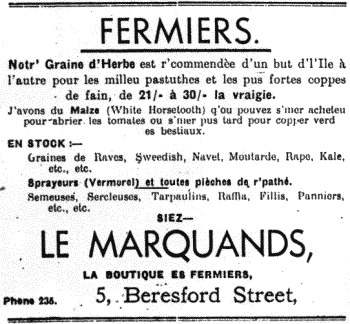
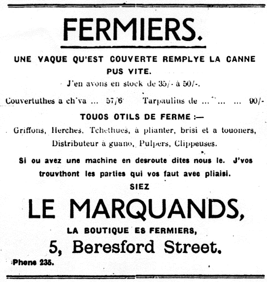
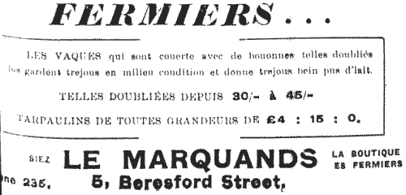

Evening Post 1948



|
lus gardent trejous en milieu condition et donne trejous bein pus d'lait.
TARPAULINS DE TOUTES GRANDEURS DE £4 : 15 : 0, La Boutique ès Fermiers |
|
Utilizès une WILMOT SELF-LIFT CHARRUE avec votre FORDSON ou
Aussi Griffons à cheval ou a tracteur, Herses, Charrues à planter,
LE MARQUANDS, La Boutique ès Fermiers |
|
patates, et qu'ou z'avez idée d'mettre les bettes sus une pastuthe superbe, qui les f'tha vos donnee du lait à la bouctée, et qui vos donn'ra une raide bouonne coppe de fain l'année tchi vaint, j'avons justement che qui vos faut.
raisonnabl'yes, de 21/- à 35/- la vraigie. nous le saver. Tél. 235, et j'vos l'apportéthont avec pliaisi.
La boutique ès fèrmièrs 5, Beresford Street. |
Chroniques de Jersey 1946
|
Auprès les patates ou pensaient tous à ens'menchi que j'sait un
Sus toute chose insistez sus la millieu graine, la
Pour les tomates, etc., j'avons corde, raffia, tarpaulins, wet et
Le Marquand's Phone 235
J'delivrons
La Boutique ès Fermièrs |
|
d'jiaitre après l's'êtots ou patates tardives
les carres de l'Ile pour la pus forte coppe de fain et la milleu pastuthe, au prix l'pus raisonnabl'ye de 20/- à 30/- la vraigie. Bueue pierre, caustic, bordeau, verde neutre, et tout autre spray. Et sprayeurs de .... £6 - 5 - 0
La boutique ès fèrmièrs |
Chroniques de Jersey 1948
Fermièrs
Les fermièrs de l'Ile entiéthe savent bein que
La boutique ès fermièrs, 5, Beresford Street. Téléphonez 235 et j'vos l'apportethont avec pliaisi. |
Chroniques de Jersey 1948
|
l'sêtots, insistez sus not' graine de toute premiethe qualité, d'la sorte la pus populaithe en Jerri pour des generations - la graine qui donni les meilleurs résultats en fain et pastuthe pour 1946, et qui vos donn'ra les meilleur resultats en 1947 si ensmen- chie acheteu.
J'avons en stock: Tarpaulins, couvertuthes à chvaux (et
La boutique ès fermièrs. Cent. 235 5, Beresford Street. |
Chroniques de Jersey 1946
Deux FermièrsFrainque. - Oh, j'ai grand r'gret, Flip, mais oulle est pathée. Les springs sont touônées chent d'sus d'sous. Flip. - Hein? Mais comment, ch'tait une bouonne forte van pourtant. Tch'est que tu y'as fait donc? Frainque. - Ch'tait quand j'tions a rentrer l'fain, y'en avait une telle couoche que j'tions oblygis d'chairgi fortement pour v'nin a l'entrer tout, et j'forchimes les springs. Flip. - Vaithe, j'sait bein q'y'en avait une terribye coppe, mais oueque t'avais yeu la graine donc. Ch'tait d'tchi speciale d'angyette qui avait couotté un prix fo, absolument? Frainque. - Nouffait, pas du tout. Ch'tait d'la même graine comme trais quarts de Fermièrs de l'Ile ont s'mer d'pis l'Otchupation - d'la graine testée DES MERQUANDS, a la boutique des Fermièrs, de Beresford Street. Ch'est la les gas pour te fourni la milleu graine aux prix l'pus raisonnabye. Flip. - Et bein, faut que j'lus phone de m'en envier pour en faithe un bétché, dans l'grain. Frainque. - Vaithe, mais bouoge-tai ou tu s'ras trop tard, et sus toutes chose ordonne une bouonne forte van pour tchithier ton fain l'année tchi vain.
La piéche ès fermièrs. 5, Beresford Street. Phone 235. |
Conversation d'FermiersFrainque - Vaithe, a cheu que j'ouiyais l'autre jour, t'en vas-tu en faithe pus grand? Ph'lip - Ah, ma fait oui. J'voudrais en mâté trais mille casses si j'peut. Et tai, t'en vas-tu augmenter? Frainque - Eh bein, j'enn' crait pas. J'nait pas assez d'terre, si j'veurs faithe un mio d'fouorrage. Ph'lip - Tu t'en vas faithe accouo du fouorrage. Bah, les patates paie mus. Frainque - Eh bein, sait-tu bein Ph'lip, que j'l'ait bein considethé, et j'enn' peut pas l'vaie. Quand y faut c'menchi a accater dans l'hiver, c'hais un affaithe de brûler tout cheu q'nou a fait dans l'êtè, pour r'emplyi la pouchette ès marchands. et pis c'hais vraiement not' d'vair d'en craître un mio tous. Ph'lip - Maffait t'as bein raison, Frainque. J'crait q'j'men vais faithe un bétché d'grain et d'avaine attou vaie. Et y'ou tu'as ta s'menche? Frainque - J'lai ordonnée d'siez "LES MERQUANDS," d'la boutique ès Fermièrs, Beresford Street. Ils ont d'la s'menche superbe de froment et d'avaine au prix raisonnabye de 35/- cwt. Et pis tu peux rempyi une forme la pour le froment et y'n' a rein d'autre à faithe pour l'aver. Ph'lip - Et bein faut que j'ialle ordonné du froment pour trais vraigies et d'l'avaine pour quatre, en cherchant deux's-trais ognons d'jettes, d'tulipes et d'hyacinths pour la bouonne'femme. Ou les méthite bein, pouorre garce. Frainque - Oh bein, quand tu s'ras la amène mai sept pattes pour mon griffon; ils gardent toute machinnie, yeux.
La piéche ès fermièrs.
5, Beresford Street. |
Chroniques de Jersey 1947
Nouvelle Chronique de Jersey - Almonas 1912
Viyiz étout: